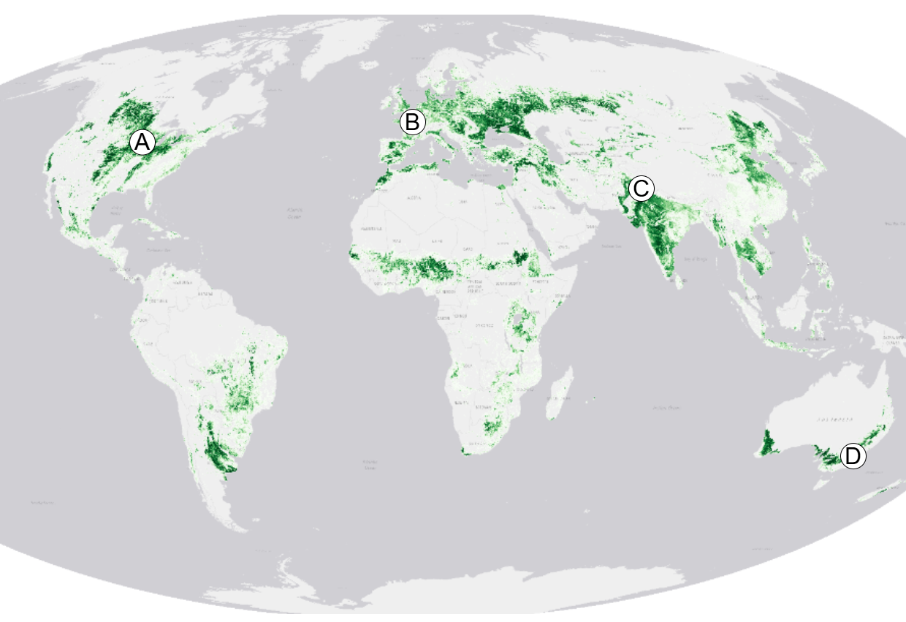
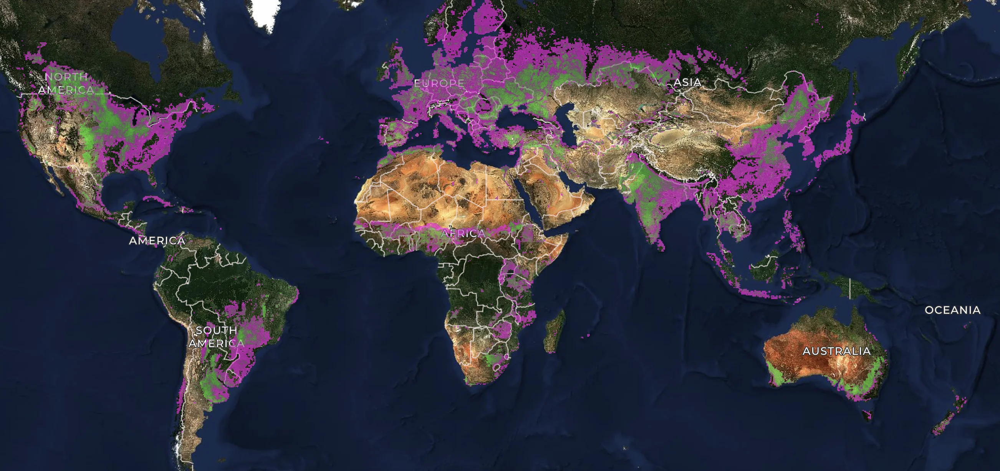
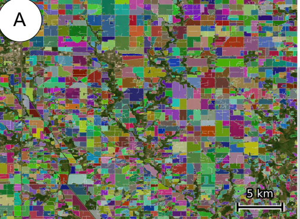
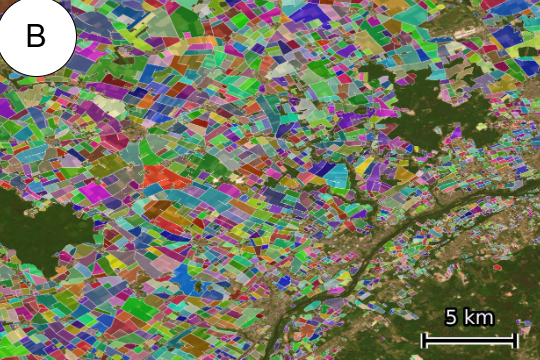
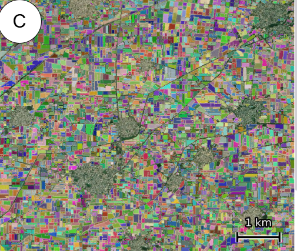
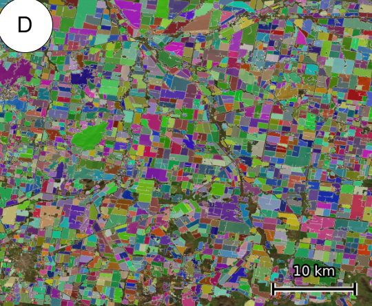
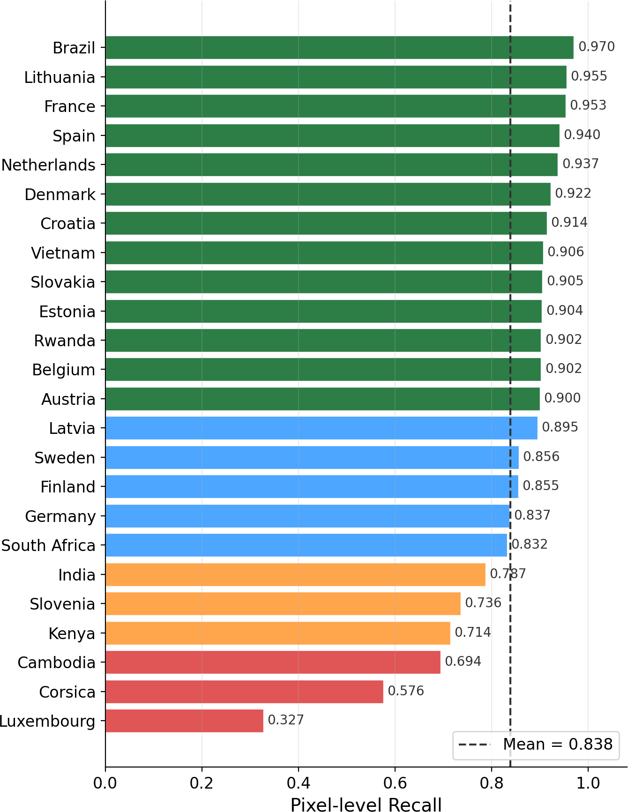

Motivation
Food securityField-level crop monitoring for analysts at NASA Harvest and UN FAO.
Carbon & MRVMeasures conservation and climate programs at the field scale.
Precision agricultureEnables analytics and products built at the field level.
Policy & complianceSpatially explicit evidence for regulations like the EU Deforestation Regulation.
Method
1
Cloud-free Sentinel-2 mosaicsPlanting and harvest season composites over all land on Earth.
2
The PRUE segmentation modelTrained on the open FTW benchmark: 1.6 M parcels across 24 countries.
3
Planetary-scale inference256 GPUs on Wherobots RasterFlow → 3.17 B field polygons.
Each polygon is a remote-sensing field unit resolved from satellite imagery; it may merge or split legal parcels.
Global coverage

Model-predicted field density, aggregated to 500 m. Green indicates mapped cropland.
Open ecosystem
Benchmark dataset, baseline models, an Explorer app, and an open API, all released CC-BY. Community calls meet every other Thursday at fieldsofthe.world.
A single model mapped agricultural field boundaries across every country and territory on Earth.

The FTW Explorer: density of the 3.17 B mapped fields (purple: sparse, green: dense) over Sentinel-2 cloudless imagery.
3.17 B
field boundaries
241
countries & territories
10 m
Sentinel-2 resolution
2024 + 25
two annual snapshots
A

Iowa, USA
B

Beauce, France
C

Punjab, India
D

New South Wales, AUS
The same model resolves both large mechanized fields and sub-hectare smallholder plots, at native 10 m resolution.
Validation

Pixel-level recall of 2025 predictions vs. ground-truth field boundaries, 24 countries. Mean recall 0.852; 14 of 24 exceed 0.90.
0.89
Austria (F1)
0.88
Latvia (F1)
0.74
Finland (F1)
Full-country F1 vs. complete national parcel registries (LPIS/INVEKOS), pixel level at 10 m.
Limitations
Confidence-scoredEvery 500 m cell carries a modeled confidence score (AUC 0.82). Filter at whatever threshold fits your use case.
844 M fields by defaultThe default filter keeps 844 M high-confidence 2025 fields; the full unfiltered 1.55 B are also released.
Annual crops onlyOrchards, vineyards, and pasture are out of scope. Very small smallholder fields can also over-fragment into clusters of pixel-scale polygons.
Not a cadastral productBoundaries follow pixels, not legal parcels or land tenure.
Contact
Isaac CorleyTaylor Geospatial — isaac.corley@taylorgeospatial.org
Caleb RobinsonMicrosoft AI for Good Lab — caleb.robinson@microsoft.com
Live demo on my laptop. Come find me at the showcase.